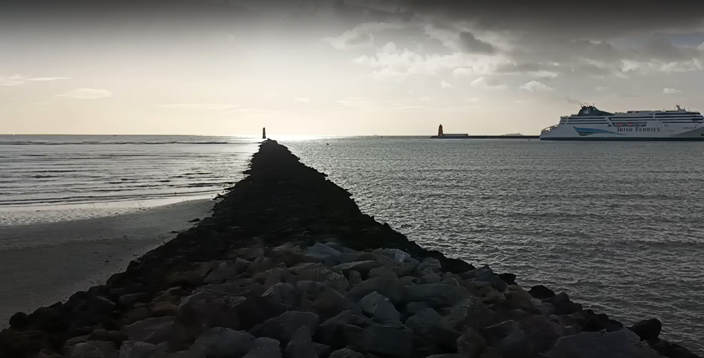

To the lighthouse
Cyling to every lighthouse in Ireland. Vol 1: The mild, non-Atlantic way


Preface
Mam
When my mam ran her first Dublin City Marathon in 1982, aged forty, she had five daughters cheering her on and me in her unwittingly belly. Running was sweeping the nation and a marathon was a natural transition for someone whose body was conditioned by a life of swimming and casual cycling. She grew up in Clontarf along Dublin Bay and lived by the tide. Every day she’d go for a swim in the Bull Wall and hang around for the bants. Then, as a teenager in the late ’50s, she got a bike and cycled in and out of town to work. These halcyon years of good clean fun ended abruptly when she got married in 1966 and moved inland to rural Lucan where my dad had been working. The catalyst was dancing, a hugely popular activity whose social function was to reel in fertile young people and churn out fecund mammies and daddies. They bought a #NewBuild in a lonesome housing estate whose only facilities were a kerbed road and a growing slew of sprogs to play on it. Within six years, my parents had contributed four girls to the local pot and home life was filled with washable nappies, burnt liver and Childcraft books. My dad worked nearby in an agricultural co-op, a solid job for the Nth son of a farmer and he grew his own vegetables and fruit for the family. My mam sometimes fed them nettle soup and, to their further scarlification, she didn’t believe in television. She taught music at home and on a Sunday she played the church organ while the girls sang in her choir. In the summer, she’d load everyone in the car and head off to Dublin’s many beaches. She never got over living away from the sea.
After twelve years, it was time to put herself first. She did a music diploma in UCD and cycled there and back. 50k on the bike a few times a week was a newfound freedom, even on a High Nelly with no gears. Nowadays your colleagues might marvel at that kind of behaviour but back then people thought she was a loon. Someone once pulled up beside her and asked if she wanted a lift to the mental hospital. She graduated in 1979 and celebrated by having another girl, Margaret, and then I slotted in as the younger partner in the second iteration of the family. This time round, motherhood would be less shackling and, with the childminding support of her husband and elder daughters, Mary Ryan began galavanting goodo.
Life begins at forty
A hard core of marathon runners were also doing triathlons and mam was built for their brutality. Every summer we’d holiday in Sligo where Mam would do the All-Ireland Triathlon, a half-ironman for which RTE did a highlights show. She began cycling across Europe with the late Ann Behan, and, by 1989, Dad jumped on the bantwagon and started cycling with her of a Sunday morning – thanks to the introduction of a cheeky Saturday evening mass. In 1991 they cycled along the Danube to celebrate their twenty-fifth wedding anniversary and suddenly every year had a spin thrown in. Paris to Lourdes and back. Up and down Sweden. In ’95, she cycled from Lands End to John O’Groats, along with Ercus Stewart and the late Liz McKenna, her spiritual twin. This was a format she came to focus on. Coast to coast. In ’97 Mam and Dad cycled all the way across Australia, from Perth to Sydney, with Liz again and the late Vincent Crowley. In the van was Tony Rock, a triathlon friend and brother of Barney. Dad had to peel off at Melbourne to come home and look after the shop he had since set up after his job went tits up in ’84. For six weeks, a seventeen-year-old Margaret had been running the shop while I, now fourteen, helped out and then went home to cook dinner every evening, blasting out The Manic Street Preachers in our seemingly permanent free gaff. Barbara, who by now had two toddlers of her own, lived nearby and kept an eye on us. Dad got injured after the Australia cycle so in 1999, my mam joined a posse of Yanks and cycled across America from San Fran to Maine on a 6000k diagonal across all kinds of climates. She later went the length of Vietnam with Liz and Ercus, but after that, the holidays were a little more #chill.
Me and my sisters would track their journeys on a wallchart, and Emer once even set up a blog on the old interweb 1.0. We’d soak up their stories when they finally came home, bearing weightless postcards from strange lands. Their memories of these trips are stronger than anything else they’ve done in life. My dad still loves to talk about cycling up the Col du Tourmalet and my mam can still feel the highs of cycling over the Rockies and the lows along on the dull plains out the other side. In 2014, once I had finally discovered cycling myself, me and Mam cycled together from Mizen Head to Malin Head with Dad and my cousin in the car behind slash ahead. After that trip, Mam had an exceptionally serious bout of mania. The activity that had kept her sane all her life came back to bite her. The doctors couldn’t believe how quickly she recovered but then the Covid lockdowns struck her hard and the medication has stolen a little of her magical energy. She still swam in the sea until she was eighty, when she finally felt its cold, so now she gets the Boola Bus into town and does lengths in the pool. Dad still tends his garden and we are looking forward to his ninetieth birthday in early 2025.
Now or never
I am now at the same stage of life as my mam was when she started running marathons, minus the first four kids. I have a wife, young kids, elderly parents, a sapping job, and an intermittent urge to escape them all. When I began this book, I was thirty-nine and my wife was pregnant with our second child. I worked from home and I hated our shitbox duplex rental. Every weekend I’d jump on my bike and climb the Dublin mountains or explore the delicioso Dublin coast. When I cycle, ideas come to me and sentences start writing themselves in my head. I like to stop for coffee and lash down my notes on a till receipt and I’d have the outline for a piece I’d never publish. One day, recorded in the first chapter of this book, I realised that I could bottle my behaviour by cycling to all of the lighthouses in Ireland and writing a blog slash book about it. I knew I had to get some momentum into a project before the bambino arrived and life re-intensified. In the end I didn’t have the courage to publish the blog but I did dunzo the thankfully book.
The carrots and the shtick
This is a book about finding little adventures in a life too busy for big adventures. The pictures in this book are of lighthouses but the writing mostly isn’t. Plenty of people revel in lighthouses and write with passion about engineering and shipwrecks and the loneliness of the lighthouse keeper. I read about these as I went along, and I will point you to them, but I have little interest in re-heating eleventh-hand stories. This book is about the journeys, cycling to the lighthouse, one at a time. Getting ready, hitting the road, seeing places, listening to the people I meet and cyclobathing in the beauty of the Irish coast. Eventually, an hour or twelve later, a lighthouse always appears at the end of the funnel.
I need a target and a lighthouse is the perfect carrot on a stick, surrounded by the nothingness of the big blue wobbly thing. Lighthouses are like flags on The Moon except you can actually go and see them yourself. The target makes it easier to ploddy peddle forward in the face of tiredness or boredom or manky weather. And having a sequence of targets has forced me to do the thing I love so much. Cycling and seeing new places.
Afterwards, writing each chapter in turn has given purpose to my days. I’d wake up before the kids and play with words before they called for my attention, and then my job afterwards. In this way, I kept myself sane for over two years amidst the swirling drain of midlife.
Route
This volume covers the thirty-odd lighthouses along the mild, non-Atlantic coast of Ireland, from East Cork to South County Down. Later volumes will cover the big long looparooney round the Wild Atlantic Doris, boat trips out to the island lighthouses, and a trip around Northern dauntingly Ireland, but I haven’t yet worked out a format for each of them. The entire project doubles up as a loose effort to see the entire coastline of Ireland and this solves the from problem. Where am I cycling from? At first I just cycled from home but I soon learnt that it made sense to follow the coast and begin each trip in a town near the last lighthouse I had been to.
The first few chapters take place at home in County Dublin whose varied coastline is filled with lighthouses. These chapters deal with memory and mental health, as the familiar places remind me of who I am and where I’ve come from. I come to learn why I am doing this journey, how the bike and the sea wash away the strains of my life. The terrain becomes progressively less familiar as the book progresses, with the journeys to Wicklow Town and Balbriggan being a transition from home to away. The trips down memory lane are replaced by the reflections of a fresh tourist inspecting this land of roads, hedges, farms, hills, cliffs, bays, beaches and peninsulae. I cover the mellow coast of Meath and Louth, and the Mourne Mountains of South County Down. I take on Wicklow, Wexford, Waterford, and East Cork, semi-systematically. The journeys also double up as a househunting venture, looking for a place by the sea to raise our family, in the hope that we can break free from our shitbox duplex on the outskirts of Dublin’s Fair City.
This book is for Mary, for having the courage to do what she wanted to do, and for Valentine, for having the serenity to accept and enjoy the wife that no man could change.